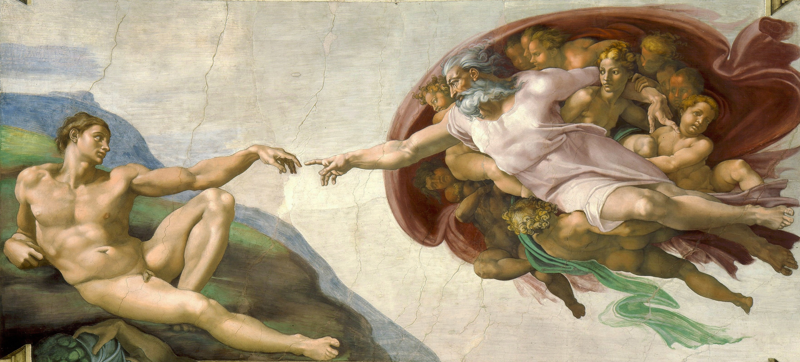
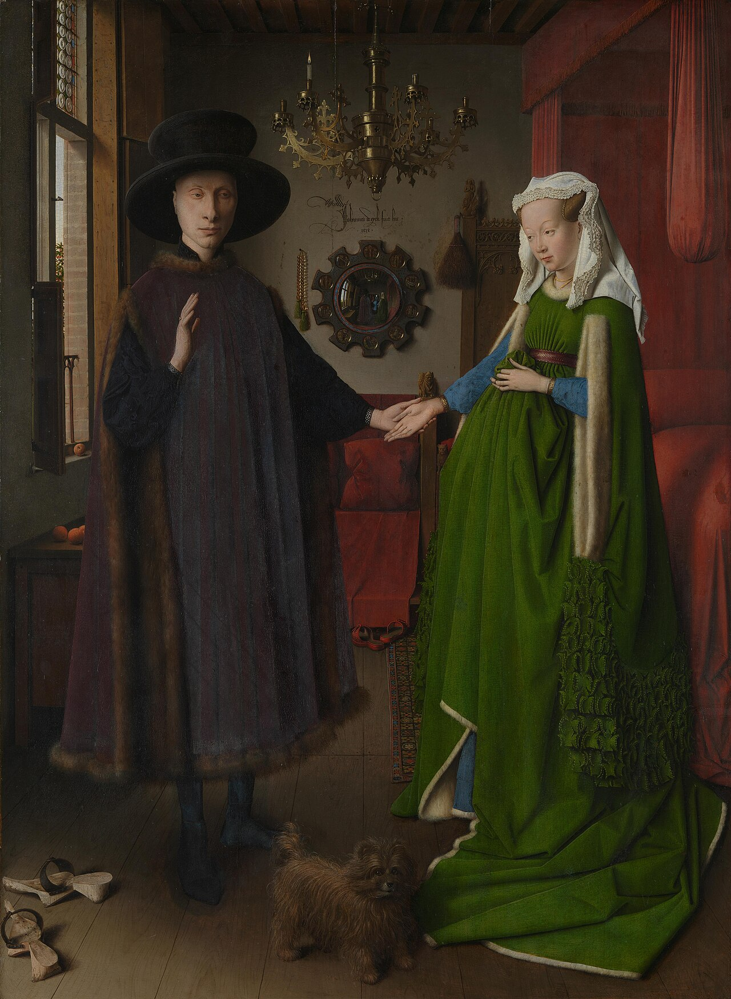
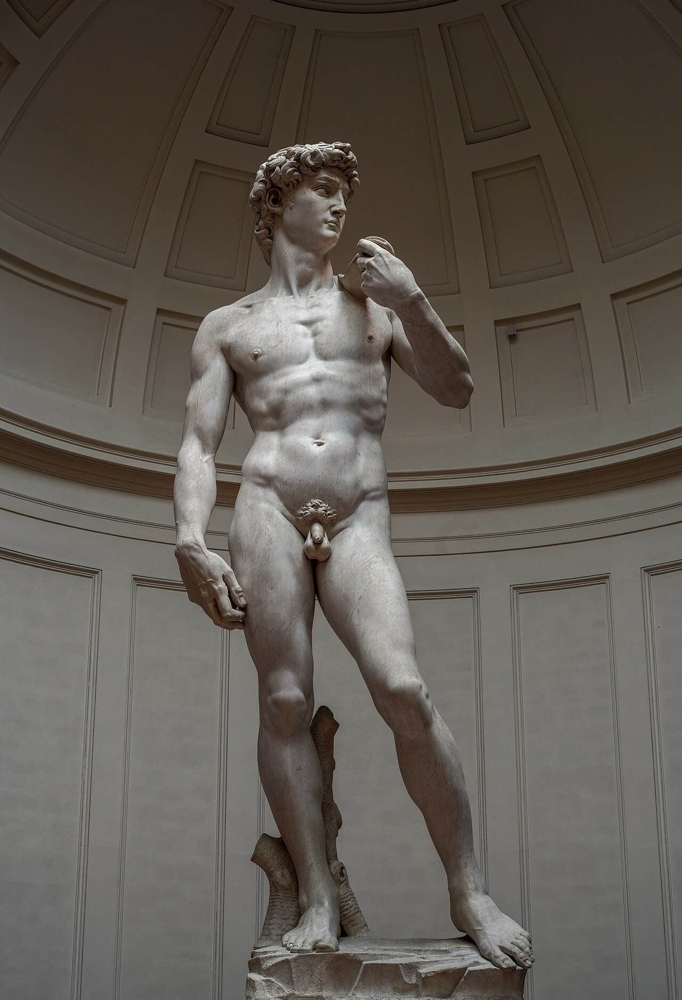
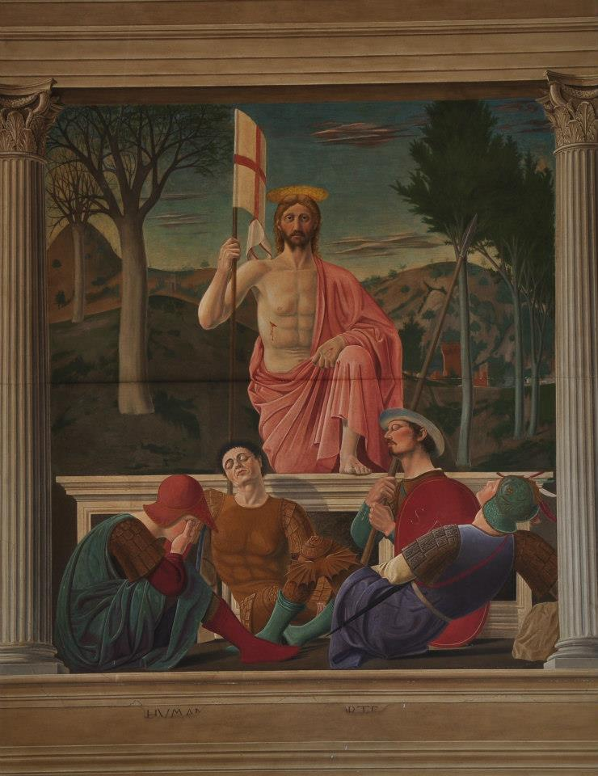
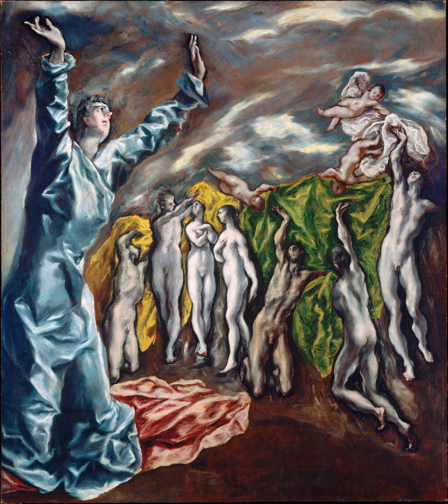

Meesterwerk: Mona Lisa
Leonardo da Vinci, 1503-1519

⚜️ UITGEBREIDE STIJLFIGUREN
📐 PERSPECTIEF & RUIMTE
Lineair perspectief: Brunelleschi's uitvinding - parallelle lijnen convergeren naar één verdwijnpunt. De ruimte wordt wiskundig geordend, meetbaar, rationeel.
Luchtperspectief: Verre objecten worden blauwer, lichter, minder scherp. Leonardo perfectioneert dit - de atmosfeer wordt zichtbaar.
📏 PROPORTIE & ANATOMIE
Gulden snede: Wiskundige verhoudingen bepalen schoonheid. De mens is de maat van alle dingen (Vitruvius).
Anatomische studie: Ontleding van lijken om spieren en botten te begrijpen. Michelangelo en Leonardo doen secties - kunst wordt wetenschap.
🎨 SFUMATO & MODELERING
Sfumato: "Roken" - zachte overgangen tussen kleuren en toonwaarden. Geen harde lijnen maar vloeiende schaduwen. Leonardo's handelsmerk.
Chiaroscuro: Licht-donker contrast om volume te creëren. De driedimensionaliteit van de figuur wordt benadrukt.
🏛️ HUMANISME & CLASSICISME
Terug naar de oudheid: Griekse en Romeinse kunst als ideaal. De mens centraal - niet God, maar de menselijke potentie.
Individualisme: Portretten tonen unieke persoonlijkheden. De kunstenaar wordt een genie, niet meer anoniem.
🎨 TIEN MEESTERWERKEN - GEDETAILLEERDE ANALYSE
1. "Mona Lisa" (1503-1519) — Leonardo da Vinci
Louvre, Parijs · 77 × 53 cm · Olieverf op paneel
Achtergrond: Lisa Gherardini, de vrouw van een Florentijnse zijdehandelaar. Leonardo werkte er jaren aan en nam het mee naar Frankrijk. Het is het meest bezochte kunstwerk ter wereld.
🔍 STIJLANALYSE
Sfumato: De overgangen zijn zo zacht dat er geen lijnen zijn. De mondhoeken, de ogen, de neus - alles vloeit in elkaar over. Dit creëert de mysterieuze glimlach.
Luchtperspectief: De achtergrond is wazig, blauwig, ongrijpbaar. De bruggen en rotsen lijken in de mist. Leonardo wist dat lucht een medium is dat het zicht beïnvloedt.
De blik: Mona Lisa kijkt recht naar de kijker, maar met een zwevende, dromerige uitdrukking. Ze is tegelijkertijd aanwezig en afwezig. Dit is geen portret maar een persona.
Compositie: De driehoeksvorm (pyramide) - hoofd, schouders, handen. Dit is de ideale Renaissance-compositie: stabiel, harmonieus, klassiek.
De handen: Gevouwen, rustig, elegant. De rechterhand rust op de linker - een gebaar van waardigheid. Geen sieraden, geen statussymbolen - alleen de persoon telt.
2. "Het Laatste Avondmaal" (1495-1498) — Leonardo da Vinci
Santa Maria delle Grazie, Milaan · 460 × 880 cm · Tempera en olie op pleister

Achtergrondond: Geschilderd in het klooster van Santa Maria delle Grazie in opdracht van Lodovico Sforza. Het toont het moment dat Jezus zegt: "Eén van jullie zal me verraden." Het is een van de meest gereproduceerde afbeeldingen ter wereld.
🔍 STIJLANALYSE
Het moment: Niet het avondmaal zelf, maar de schok van de verraad-aankondiging. De apostelen reageren - sommigen geschokt, sommigen woedend, sommigen verdrietig. Judas (vierde van links) krimpt ineen.
Perspectief: Het verdwijnpunt zit in het midden, precies achter het hoofd van Christus. De lijnen van het plafond, de tafel, de muren - alles leidt naar Hem. De architectuur is rationeel geordend.
Compositie: Christus is centraal, alleen, symmetrisch. De apostelen zijn in groepjes van drie verdeeld - vier groepen die beweging creëren. Dit is wiskundige perfectie.
Psychologie: Elke apostel heeft zijn eigen karakter. Petrus is heftig, Johannes is jong en zacht, Tomas wijst (twijfel). Leonardo was ook toneelmeester - hij wist hoe je emotie toont.
3. "De Schepping van Adam" (1508-1512) — Michelangelo
Sistijnkapel, Vaticaan · 280 × 570 cm · Fresco

Achtergrond: Onderdeel van het plafond van de Sistijnkapel, geschilderd in vier jaar. Michelangelo lag op zijn rug op een steiger. Het toont het moment dat God Adam leven geeft - hun vingertoppen raken bijna.
🔍 STIJLANALYSE
Anatomische perfectie: Adam's lichaam is geïdealiseerd - spieren die nog niet bestaan, proporties die alleen in de mythologie mogelijk zijn. Michelangelo bestudeerde lijken om dit te bereiken.
De ruimte tussen: De kleine ruimte tussen Gods en Adams vingers is het belangrijkste deel van het schilderij. Het is de schepping zelf - de vonk, het leven, de verbinding tussen goddelijk en menselijk.
God in beweging: God is omgeven door engelen, gewikkeld in een mantel die lijkt op een hersenschors (de menselijke geest). Hij beweegt zich naar Adam toe - het initiatief ligt bij God.
Adam's lethargie: Adam ligt lui, passief, zijn arm hangt slap. Hij ontvangt het leven maar lijkt er niet veel voor te hoeven doen. Dit is controversieel - is de mens actief of passief in de schepping?
4. "De School van Athene" (1509-1511) — Raphael
Vaticaan, Rome · 500 × 770 cm · Fresco

Achtergrond: Een van de kamers in het Vaticaan (Stanza della Segnatura). Het toont alle grote filosofen van de oudheid verzameld in een fantastische architectuur. Plato en Aristoteles staan centraal.
🔍 STIJLANALYSE
Perspectief: Het meesterwerk van lineair perspectief. De lijnen convergeren naar het centrum, waar Plato en Aristoteles staan. De koepel, de tegels, de pilaren - alles is wiskundig perfect.
Plato vs Aristoteles: Plato wijst omhoog (naar de ideale vormen), Aristoteles wijst naar beneden (naar de tastbare wereld). Twee filosofische scholen in één gebaar.
Portretten: De figuren zijn portretten van Renaissance-kunstenaars. Plato is Leonardo, Heraklit is Michelangelo (die Raphael niet mocht). Raphael zelf kijkt naar ons (rechtsonder).
Humanisme: De klassieke filosofie wordt gevierd in het hart van het christelijke Vaticaan. Humanisme en geloof hand in hand - dat is de Renaissance.
5. "De Geboorte van Venus" (1484-1486) — Sandro Botticelli
Uffizi, Florence · 172 × 278 cm · Tempera op doek

Achtergrond: Geschilderd voor de Medici-familie in Florence. Het toont de geboorte van Venus uit het schuim van de zee, volgens de mythologie. Het is een van de eerste grote naakten van de Renaissance.
🔍 STIJLANALYSE
Lineaire stijl: Botticelli's stijl is meer lineair dan modelerend. Contouren zijn belangrijker dan volume. Het lijkt op een tekening met kleur - elegant, sierlijk, niet echt driedimensionaal.
Venus' pose: De "schaamtevolle Venus" - ze bedekt zich, maar lijkt te zweven. Haar houding is onnatuurlijk elegant, geïnspireerd door klassieke beelden. Schoonheid gaat boven realisme.
Symboliek: De rozen die waaien (geboren uit het bloed van Uranus), de windgod Zephyr die Venus aanblaast, de nimf die een mantel aanbiedt. Het is allegorie van liefde en schoonheid.
Platonische liefde: Dit is geen erotiek maar verheerlijking. Venus is het ideaal van schoonheid, niet een vrouw van vlees en bloed. De Medici zagen dit als filosofische kunst.
6. "Het Arnolfini-portret" (1434) — Jan van Eyck
National Gallery, Londen · 82 × 60 cm · Olieverf op paneel

Achtergrond: Een huwelijksportret van Giovanni Arnolfini en zijn vrouw (waarschijnlijk in Brugge). Van Eyck was een meester van de olieverftechniek. Het is een van de meest geanalyseerde werken uit de kunstgeschiedenis.
🔍 STIJLANALYSE
Olieverf precisie: Van Eyck perfectioneerde olieverf. Details: de hond, de klompjes, de spiegel, de kroonluchter - alles is hyper-realistisch. Je zou de stof kunnen voelen.
De spiegel: De convexe spiegel aan de muur toont de achterkant van het koppel én twee figuren in de deuropening (waarschijnlijk de kunstenaar en een getuige). De spiegel is ook een symbool van Gods oog.
Symbolen: De hond (trouw), de ene brandende kaars ( Gods aanwezigheid), de schoenen (heilige grond), het fruit (overvloed). Het is een visueel contract van het huwelijk.
Handafdruk: Boven de spiegel staat "Jan van Eyck was here" - alsof hij een getuige was bij het huwelijk. De kunstenaar als notaris, als aanwezige, als schepper van de werkelijkheid.
7. "David" (1501-1504) — Michelangelo
Galleria dell'Accademia, Florence · 517 cm hoog · Marmer

Achtergrond: Gesneden uit een enkel blok marmer dat eerder was afgewezen. David staat op het punt om Goliat te verslaan. Het symbool van Florence - de kleine republiek tegen de grote staten.
🔍 STIJLANALYSE
Contrapposto: Het klassieke standje - gewicht op één been, heupen en schouders in tegenovergestelde hoek. Dit creëert natuurlijke spanning en elegantie.
Vergroting: De handen en het hoofd zijn groter dan proportioneel correct. Dit komt omdat het beeld oorspronkelijk hoog op een gevel zou staan - van onderaf gezien lijken ze normaal.
Spanning: David staat niet in actie maar in anticipatie. De gespannen nek, de vernauwde ogen, de aderen in de hand - hij concentreert zich voor de strijd. Dit is psychologisch realisme.
Idealisatie: David is geen gewone jongen maar een god. De spieren, de aderen, de proporties - dit is de perfecte mens volgens de Renaissance. Schoonheid = deugd.
8. "Venus van Urbino" (1538) — Titiaan
Uffizi, Florence · 119 × 165 cm · Olieverf op doek

Achtergrond: Geschilderd voor de Hertog van Urbino. Het is geen mythologische Venus maar een Venetiaanse courtisane (of de hertog himself?) die recht naar de kijker kijkt. Het is veel directer dan Botticelli's Venus.
🔍 STIJLANALYSE
De blik: Ze kijkt recht naar de kijker, zonder schaamte. Dit is revolutionair - een naakte vrouw die haar eigen seksualiteit claimt. Geen mythologisch excuus nodig.
Kleur: Titiaan's Venetiaanse kleuren - warm wit, goud, rood. De huid gloeit. De achtergrond is donker, waardoor het lichaam naar voren springt. Dit is kleur als emotie.
Domestieke setting: Geen mythologisch landschap maar een slaapkamer. De bedienden in de achtergrond, de hond (trouw), de rozen op het bed. Dit is intiem, persoonlijk, bijna voyeuristisch.
Influencer: Dit werk beïnvloedt generaties - van Rubens tot Manet's "Olympia". Het is de oermoeder van het westerse naakt.
9. "De Verrijzenis van Christus" (1475-1479) — Piero della Francesca
Museo Civico, Sansepolcro · 225 × 200 cm · Fresco

Achtergrond: Geschilderd in Piero's geboorteplaats Sansepolcro ("Heilige Graf"). Het toont Christus die opstaat uit het graf, met slapende soldaten eromheen. Het is een van de meest monumentale Renaissance-werken.
🔍 STIJLANALYSE
Geometrische structuur: Piero was ook wiskundige. De compositie is gebaseerd op geometrische vormen - driehoeken, vierkanten. Christus staat verticaal midden, de slapende soldaten vormen horizontale lijnen.
Christus' houding: Hij staat op het graf, de hand op de knuppel (het kruis?), de andere hand zegent. Het is geen strijd maar serene triomf. De leeuwachtige gezichtsuitdrukking is uniek.
Landschap: Links (achter de slapende soldaten) is winter, rechts (achter Christus) is lente. De verrijzenis brengt nieuw leven. De bomen herleven achter Hem.
Stilte: Ondanks het monumentale formaat is er een stilte over dit werk. De slapende soldaten, de kalme Christus - het is alsof de tijd is stilgestaan.
📚 TIJDSGEEST CONTEXT (1400-1600)
🌍 POLITIEK PERSPECTIEF: MACHT, DIPLOMATIE EN OORLOG
De Renaissance (1400-1600) ontwikkelde zich in een politieke context die fundamenteel verschilde van de rest van Europa: de Italiaanse stadstaten. Terwijl Frankrijk, Engeland en Spanje evolueerden naar centraliserende monarchieën, bleef Italië een mozaïek van rivaliserende republieken (Florence, Venetië, Siena), hertogdommen (Milano, Ferrara, Urbino), en de Kerkelijke Staat. Deze politieke fragmentatie, oorspronkelijk een zwakte, werd een kracht: competitie tussen staten stimuleerde culturele en artistieke productie als instrument van prestige en legitimatie. Florence, de bakermat van de Renaissance, was een republiek die door een oligarchie van handelaren en bankiers werd geregeerd, met de Medici-familie als eerste onder gelijken. De val van Constantinopel in 1453 bracht Griekse geleerden en klassieke manuscripten naar Italië, wat de herontdekking van de oudheid versnelde.
De sociale dynamiek werd gekenmerkt door de opkomst van een welvarende, gecultiveerde bourgeoisie die kunst begon te patroneren als expressie van status, smaak en humanistische idealen. De commercieel-bankierselite, verrijkt door de textielindustrie, internationale handel en bankieren, creëerde een nieuwe cultus van het individu: het 'Renaissance-man' ideaal, dat uitmuntendheid in kunst, wetenschap, letteren en staatsmanschap combineerde. De humanisten, die Latijnse en Griekse klassieken bestudeerden, ontwikkelden een seculiere ethiek van burgerdeugd en politieke participatie. De academies en salons werden centra van intellectuele uitwisseling, terwijl de uitvinding van de boekdrukkunst (ca. 1450) de democratisering van kennis mogelijk maakte.
Belangrijke politieke gebeurtenissen omvatten de Italiaanse Oorlogen (1494-1559), waarbij Frankrijk, Spanje en het Heilige Roomse Rijk streden om controle over Italië, wat leidde tot de ondergang van de Italiaanse onafhankelijkheid en de dominantie van Spaanse en Franse invloed. De plundering van Rome in 1527 door de troepen van keizer Karel V betekende het einde van de Italiaanse Renaissance als politieke en culturele macht. De Reformatie (vanaf 1517) verdeelde Europa langs religieuze lijnen en leidde tot eeuwen van conflict, maar stimuleerde ook de Contrareformatie en de katholieke hervorming. De ontdekking van Amerika (1492) en de vaarroute naar Indië (1498) begon het tijdperk van Europese koloniale expansie en kapitalisme.
De verbinding tussen politiek en artistieke stijl was fundamenteel en intentioneel. De herontdekking van de klassieke oudheid was niet slechts een artistieke mode, maar een politiek programma: de republikeinse deugden van Rome en Athene werden geplaatst tegenover de tirannie van middeleeuwse vorsten. Het perspectief, ontwikkeld door Brunelleschi en geformaliseerd door Alberti, verbeeldde een rationele, meetbare wereld die de humanistische nadruk op rede en wetenschap weerspiegelde. De naakten en mythologische thema's van Botticelli, Michelangelo en Titiaan vierden de mens als maat aller dingen - een seculier humanisme dat niet anti-religieus was, maar de mens als goddelijke schepping benadrukte. De architectuur, geïnspireerd op klassieke modellen met zuilen, frontons en symmetrische gevels, verbeeldde een orde en proportie die de idealen van burgerdeugd en politieke stabiliteit visualiseerde. Het portret, dat in de Renaissance tot bloei kwam, vierde het individu - niet als middeleeuwse boeteling, maar als dignus, capabele burger. De kunst werd politiek instrument: Lorenzo de' Medici gebruikte Botticelli's 'Primavera' en 'De Geboorte van Venus' om de intellectuele en artistieke superioriteit van Florence te demonstreren, terwijl paus Julius II Michelangelo opdroeg het plafond van de Sixtijnse Kapel te schilderen om de autoriteit van de kerk te verheerlijken. De Renaissance was niet slechts een artistieke revolutie, maar een politieke en sociale transformatie die de basis legde voor de moderne wereld.
Bronnen: Wikipedia - Renaissance, Italian Renaissance, Medici, Humanism, Italian Wars, Sack of Rome (1527), Protestant Reformation, Age of Discovery.
📖 LITERAIR PERSPECTIEF
De Renaissance (1400-1600) markeerde de wedergeboorte van klassieke literatuur en de opkomst van humanisme, een intellectuele beweging die de mens centraal stelde. Deze literaire revolutie transformeerde de kunsten fundamenteel. Het humanisme, geïnitieerd door Francesco Petrarca (1304-1374), de 'vader van het humanisme', herontdekte de klassieke oudheid en propageerde de studie van 'studia humanitatis' (grammatica, retorica, poëzie, geschiedenis, moraalfilosofie). Petrarch's 'Canzoniere', een cyclus van 317 gedichten aan de ideale Laura, introduceerde het sonnet en het concept van de geïdealiseerde, onbereikbare liefde. Deze poëzie beïnvloedde de visuele representatie van vrouwelijke schoonheid: de serene, profane Madonna's van Raphael en de Venus-figuren van Botticelli verbeeldden dezelfde combinatie van fysieke perfectie en spirituele onbereikbaarheid. Giovanni Boccaccio (1313-1375), tijdgenoot en bewonderaar van Petrarca, schreef de 'Decamerone' (1353), een collectie van 100 verhalen verteld door tien vluchtelingen voor de pest. Dit proza-meesterwerk vierde de menselijke ervaring in al haar variëteit - liefde, slimheid, tragedie, komedie - en bood een schat aan iconografisch materiaal. Taferelen uit de 'Decamerone' werden geschilderd door Renaissance-meesters, en het realisme van Boccaccio's verteltrijk weerspiegelde zich in de naturalistische tendensen van de schilderkunst. Baldassare Castiglione's 'Il Libro del Cortegiano' (1528), 'Het Boek van de Hofman', definieerde het ideale gedrag van de Renaissance-aristocraat: 'sprezzatura' (schijnbare moeiteloosheid), veelzijdigheid, en verfijnde manieren. Dit traktaat beïnvloedde de iconografie van het Renaissance-portret: de serene, zelfverzekerde blik van Lorenzo de' Medici door Bronzino, de intelligente nieuwsgierigheid van 'La Gioconda' door Leonardo da Vinci. Hofman-schap werd een visueel thema, en kunstenaars schilderden hun opdrachtgevers als belichamingen van Castiglione's ideaal. De herontdekking van klassieke auteurs - Cicero, Virgilius, Ovidius, Plutarchus - transformeerde de thematiek van de beeldende kunst. Mythologische scènes, ontleend aan Ovidius' 'Metamorphosen', werden populair: Danaë, Leda, Apollo en Daphne, Diana en Actaeon. De humanistische nadruk op het individuele en het aardse leidde tot portretkunst, landschapschilderkunst en genre-scènes die de mens in zijn natuurlijke omgeving toonden. Filosofische dialogen, zoals die van Marsilio Ficino en Pico della Mirandola, verspreidden het neoplatonisme: het idee dat schoonheid een weerspiegeling was van goddelijke perfectie. Deze filosofie rechtvaardigde de naakte figuur en inspireerde de harmonieuze compositie die kenmerkend werd voor de Renaissance. Deze literaire revolutie transformeerde ook de beeldende kunst. De humanistische nadruk op de waarde van het individu leidde tot de opkomst van het portret als genre - een visuele pendant van de autobiografie en de biografie die zo populair waren in de Renaissanceliteratuur. De herontdekking van klassieke teksten inspireerde niet alleen de iconografie (mythologische scènes, historische episodes) maar ook de compositieprincipes die gebaseerd waren op klassieke retorica en poëtica. De Renaissance-kunstenaar, gelezen in de humanistische literatuur, begreep zijn werk in literaire termen: hij 'vertelde' verhalen, 'citeerde' klassieke vormen, 'componeerde' volgens regels die parallel liepen aan die van de dichtkunst.
🧠 PSYCHOLOGISCH PERSPECTIEF
De Renaissance markeerde een fundamentele psychologische revolutie in het mensbeeld. Waar de middeleeuwse mens zichzelf zag als nietig in een goddelijk plan, ontstond nu een nieuw besef van individuële waarde en potentieel. Deze verschuiving was niet plotseling, maar een geleidelijk proces dat diep ingreep in de collectieve psyche. De mens begon zichzelf te zien als maker van zijn eigen lot, als creator die de wereld kon begrijpen en vormgeven. Dit 'humanisme' bracht een ongekende psychologische bevrijding, maar ook nieuwe vormen van existentiële angst.
Psychologisch gezien kenmerkte deze periode zich door een explosie van nieuwsgierigheid en zelfbewustzijn. De herontdekking van klassieke teksten voedde een intellectuele herwaardering van het individu. Portretkunst, die nu op grote schaal opkwam, weerspiegelde een diepe behoefte aan individuele herkenning en onsterfelijkheid. De kunstenaar zelf transformeerde van anonieme ambachtsman naar gevierd genie, wat een nieuw besef van persoonlijke identiteit en waarde schiep. Tegelijkertijd bleef de religieuze dimensie fundamenteel - maar nu werd het goddelijke gezocht in de perfectie van de schepping en de capaciteiten van het menselijk intellect.
De psychische toestand van de Renaissance mens werd gekenmerkt door een unieke combinatie van optimisme en onzekerheid. De wetenschappelijke revolutie en de ontdekking van nieuwe werelden verbreedden het perspectief onvoorstelbaar, maar stelden ook fundamentele zekerheden ter discussie. De kunstenaar werkte in een staat van intellectuele en creatieve opwinding, gedreven door competitie en de wens om de klassieken te evenaren of te overtreffen. De studie van anatomie en perspectief was niet alleen technisch, maar ook een psychologische zoektocht naar de essentie van het mens-zijn.
Emotioneel overheerste een sfeer van intellectuele passie en esthetische verrukking. De evenwichtige, harmonieuze composities weerspiegelden een diep verlangen naar orde en rationele controle over de chaos van het bestaan. De idealisering van het menselijk lichaam was een psychologische reactie op de middeleeuwse nadruk op zonde en verval - het lichaam werd nu gevierd als schepping van God. Toch bleef er een onderstroom van melancholie en vanitas, een besef dat alle menselijke prestaties tijdelijk waren. Deze psychologische revolutie had echter ook een donkere kant. De nadruk op individuele prestatie en schoonheid creëerde nieuwe vormen van angst - de vrees om niet te voldoen aan het ideaal, de angst voor het ouder worden en de dood, de spanning tussen christelijke nederigheid en wereldse ambitie. De vanitas-stilllevens en memento mori-motieven die populair waren in de late Renaissance getuigen van deze onderstroom van existentiële angst. De Renaissance-kunstenaar, bewust van zijn unieke talent en roeping, ervoer een nieuwe vorm van druk - de verwachting om het goddelijke te evenaren in menselijke vorm.
⚙️ HISTORISCH PERSPECTIEF
De renaissance ontwikkelde zich in Italië vanaf het begin van de vijftiende eeuw en verspreidde zich over heel Europa tot aan het einde van de zestiende eeuw, een periode die gekenmerkt werd door een hernieuwde interesse in de klassieke oudheid, fundamentele technologische innovaties en een transformatie van de Europese samenleving. De technologische context was revolutionair: de uitvinding van de drukpers door Johannes Gutenberg rond 1450 maakte de massaproductie van boeken mogelijk, wat leidde tot een explosieve verspreiding van ideeën en kennis. Het lineair perspectief, dat rond 1420 werd ontwikkeld door Filippo Brunelleschi en theoretisch onderbouwd door Leon Battista Alberti in zijn 'De Pictura' uit 1435, transformeerde de westerse kunst door een systematische methode te bieden voor het weergeven van driedimensionale ruimte op een tweedimensionaal vlak. De olieverftechniek, die in de vijftiende eeuw in de Nederlanden werd geperfectioneerd door kunstenaars als Jan van Eyck, bood nieuwe mogelijkheden voor detail, textuur en lichtweergave. De economische context was die van de opkomst van het kapitalisme en de handelseconomie: Italiaanse stadstaten als Florence, Venetië en Genua werden welvarende centra van handel en bankwezen, met familiebedrijven als de Medici in Florence die enorme fortuinen vergaarden en als kunstpatronen fungeerden. De Hanze in het noorden en de Mediterrane handelsroutes verbonden Europa met het Midden-Oosten en Azië, wat leidde tot de uitwisseling van goederen, ideeën en technologie. De sociale context zag de opkomst van een stedelijke bourgeoisie van handelaren, bankiers en ambachtslieden die nieuwe waarden van individuele prestatie, rijkdom en werelds succes vierden. Het humanisme, dat centraal stond in de renaissance, beklemtoonde de waardigheid en het potentieel van het individu, in contrast met de middeleeuwse nadruk op de zonde en de noodzaak van goddelijke genade. De politieke context was complex: terwijl Italië verdeeld bleef in concurrerende stadstaten en kleine vorstendommen, begonnen in de rest van Europa nationale monarchieën te consolideren. De Italiaanse oorlogen, die in 1494 begonnen met de invasie van Frankrijk, brachten buitenlandse troepen naar Italië en betekenden het einde van de Italiaanse dominantie in de Europese politiek. De religieuze context zag de crisis van de katholieke kerk die zou leiden tot de Reformatie van 1517, maar ook een bloei van religieuze kunst die de humanistische interesse in het menselijk lichaam combineerde met traditionele christelijke thema's. De intellectuele context werd gedomineerd door het humanisme, met geleerden als Erasmus, Thomas More en Marsilio Ficino die klassieke teksten bestudeerden en vertaalden, en nieuwe filosofische systemen ontwikkelden die platonicisme en christendom probeerden te verenigen. De wetenschappelijke context omvatte belangrijke ontdekkingen op het gebied van astronomie, anatomie en natuurkunde, met figuren als Nicolaas Copernicus die in 1543 zijn heliocentrische theorie publiceerde, en Andreas Vesalius die in 1543 zijn baanbrekende anatomische werk 'De humani corporis fabrica' publiceerde. De geografische context werd getransformeerd door de ontdekking van Amerika door Christoffel Columbus in 1492 en de zeereis rond de wereld van Ferdinand Magellaan tussen 1519 en 1522, wat de Europese blik op de wereld fundamenteel verruimde.
🎭 FILOSOFISCH PERSPECTIEF
De Renaissance (1400-1600) markeerde een fundamentele filosofische breuk met het middeleeuwse wereldbeeld, gekenmerkt door de herontdekking van klassieke bronnen en de opkomst van het humanisme. Centraal stond de figuur van Marsilio Ficino (1433-1499), die in Florence de 'Platonic Academy' leidde en Plato's werken vertaalde naar het Latijn. Ficino's neoplatonisme, met zijn nadruk op de 'anima mundi' (wereldziel) en de ladder van liefde die de mens van het materiële naar het goddelijke verheft, fundeerde een nieuwe esthetica: schoonheid werd niet meer gezien als een afspiegeling van Gods majesteit (zoals in de middeleeuwen), maar als een 'echo' van de goddelijke ideeën die in de natuur aanwezig zijn. Ficino's vertaling van het 'Corpus Hermeticum' (1463) introduceerde ook hermetische ideeën over de mens als 'magus' (tovenaar) die de natuur kan begrijpen en beheersen - een concept dat later in de alchemie en de natuurfilosofie zou uitgroeien. Epistemologisch gezien ontwikkelde de Renaissance een nieuwe notie van kennis: niet alleen openbaring en autoriteit, maar ook observatie en rede leiden tot waarheid. Deze 'empirische' benadering werd versterkt door de herontdekking van Aristoteles' natuurwetenschappelijke werken (via Arabische vertalingen) en de opkomst van 'naturalisme' in de kunst - de studie van de natuur als bron van kennis. Leon Battista Alberti's 'De pictura' (1435) fundeerde een rationele esthetica gebaseerd op wiskunde, perspectief en proportie: de kunstenaar was niet langer een handwerksman, maar een 'intellectueel' die de wetten van de natuur begreep en kon toepassen. Het 'lineair perspectief' (ontwikkeld door Brunelleschi en verfijnd door Alberti) was niet alleen een technische innovatie, maar een epistemologische revolutie: het veronderstelde dat de wereld rationeel kan worden weergegeven, dat de kijker een 'subject' is dat de ruimte construeert, en dat kunst een 'venster op de wereld' is. Deze subjectiviteit - het 'individu' als centrum van kennis - werd filosofisch verwoord door Giovanni Pico della Mirandola (1463-1494) in zijn 'Oratio de hominis dignitate' (1486), waarin hij de mens beschrijft als een 'kameleon' die vrij is om zichzelf te creëren: 'Je kunt vervallen tot de dierlijkheid, maar je kunt ook herboren worden tot het goddelijke.' Pico's 'concordia' (harmonie) tussen Platonisme, Aristotelisme, jodendom, christendom en hermetisme verbeeldde een filosofische openheid die de Renaissance kenmerkte: alle tradities bevatten fragmenten van de waarheid, die door de menselijke rede kunnen worden verenigd. Metafysisch gezien combineerde de Renaissance neoplatonische ideeën over de 'emanatie' van het Ene naar de veelheid met aristotelische noties van 'vorm' en 'materie'. Michelangelo's 'David' (1501-1504) verbeeldt dit programma: het menselijk lichaam is niet alleen een fysieke structuur, maar een 'microkosmos' die de proporties van het universum weerspiegelt (zoals Vitruvius beschreef in zijn 'De architectura', waar Leonardo's 'Vitruviusman' naar verwijst). De 'idea' of 'disegno' (tekening) was volgens Vasari het ' Vader, de Zoon en de Heilige Geest, maar ook de menselijke anatomie die de 'imago Dei' (beeld van God) verwezenlijkt. De 'sfumato' techniek van Leonardo da Vinci, met haar zachte overgangen tussen licht en donker, verwees naar de neoplatonische notie van de wereld als 'schaduw' van de goddelijke ideeën: de kunstenaar vangt niet de realiteit, maar de 'idee' achter de realiteit. Ethisch gezien ontwikkelde de Renaissance een nieuw mensbeeld: de 'homo universalis' ( universele mens) die zich onderscheidt door veelzijdigheid, creativiteit en zelfbewustzijn. Castiglione's 'Il Cortegiano' (1528) beschreef de ideale hoveling als een ' uomo universale' die zowel moedig, welbespraakt, muzikaal als artistiek is - een ideaal dat Leonardo, Michelangelo en Rafaël belichaamden. De opkomst van het 'individu' werd versterkt door de uitvinding van de boekdrukkunst (1450), die de verspreiding van ideeën mogelijk maakte, en door de 'civic humanism' (burgerlijk humanisme) van Florence, waarin de burger actief bijdroeg aan het algemeen belang. De 'Civic Humanism' van Leonardo Bruni (1370-1444) en Coluccio Salutati (1331-1406) verheerlijkte de republikeinse deugden van het Florentijnse stadstaatje: vrijheid, gelijkheid en burgerzin. De Renaissance kunstenaar was niet langer anoniem (zoals in de middeleeuwen), maar een 'celebrity' die zijn eigen stijl ontwikkelde en zijn roem zocht. De zelfportretten van Dürer (zoals zijn beroemde 'Zelfportret' van 1500, waar hij zich afbeeldt als Christus) verbeelden deze nieuwe autonomie: de kunstenaar als 'schepper' ( creator), niet slechts als 'maker' (artifex). De Renaissance esthetica, met haar nadruk op proportie, symmetrie en harmonie, verwees naar de klassieke notie van 'kalokagathia' (het goede en het schone zijn één). De 'Golden Mean' (gulden middenweg) van Aristoteles werd toegepast op compositie, kleur en expressie. De 'contrapposto' (houding met gewichtsverdeling) van klassieke beelden (zoals de 'Doryphoros' van Polykleitos) werd herontdekt en toegepast door Donatello en Michelangelo, wat een nieuwe naturalisme en beweging in de beeldhouwkunst bracht. De Renaissance was daarmee niet slechts een artistieke stijl, maar een filosofische revolutie die het menselijk potentieel, de waarde van de individuele rede en de schoonheid van de natuur vierde - een revolutie die de basis legde voor de moderne wereld.
Bronnen: Stanford Encyclopedia of Philosophy - 'Pico della Mirandola', 'Ficino', 'Neoplatonism', 'Renaissance'; Wikipedia - 'Renaissance', 'Platonism in the Renaissance', 'Humanism', 'Alberti', 'Vasari'.
10. "De Opening van het Vijfde Zegel" (1608-1614) — El Greco
Metropolitan Museum of Art, New York | 224 × 199 cm | Olieverf op doek

Achtergrond
Dit monumentale werk beeldt de profetie uit de Openbaring van Johannes uit, waar het vijfde zegel wordt geopend en de zielen van de martelaren onder het altaar roepen om gerechtigheid. El Greco schilderde dit als onderdeel van een retabel voor een kerk in Toledo.
Stijlanalyse
Verlengde figuren: Typisch voor El Greco's maniëristische stijl - de lichamen zijn onnatuurlijk uitgerekt.
Expressieve kleuren: Intense blauwe, groene en gele tinten tegen een donkere achtergrond.
Spirituele intensiteit: De compositie straalt een mystieke, bijna extatische sfeer uit.
Brug naar modernisme: Dit werk werd bewonderd door Picasso en inspireerde het kubisme.
📚 CONCLUSIE: DE MENS ALS MAAT VAN ALLE DINGEN
De Renaissance leert ons:
- Dat de mens centraal staat: Niet meer God alleen, maar de menselijke potentie
- Dat kennis macht is: Wetenschap, anatomie, perspectief - we kunnen de wereld begrijpen
- Dat schoonheid wiskunde is: De gulden snede, proportie, symmetrie
- Dat het verleden ons kan inspireren: Terug naar de oudheid om vooruit te gaan
- Dat de kunstenaar een genie is: Niet anoniem, maar een individu met een naam
De Renaissance is de wieg van het moderne Westen.